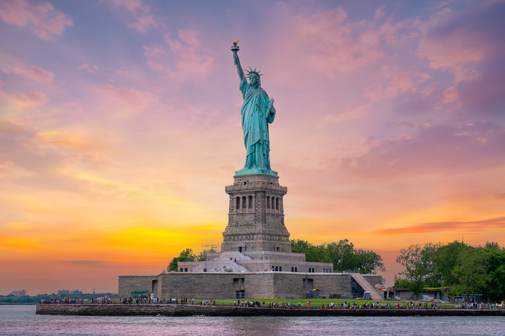
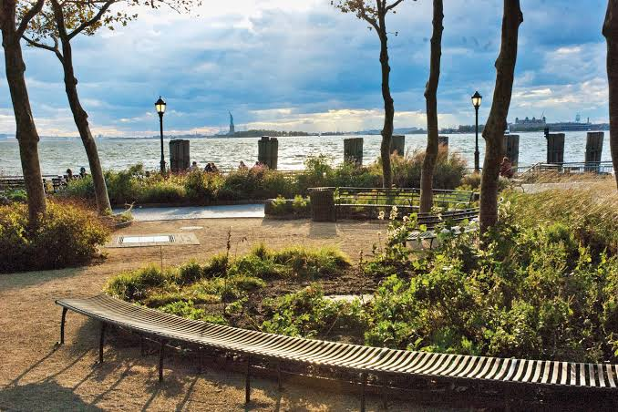
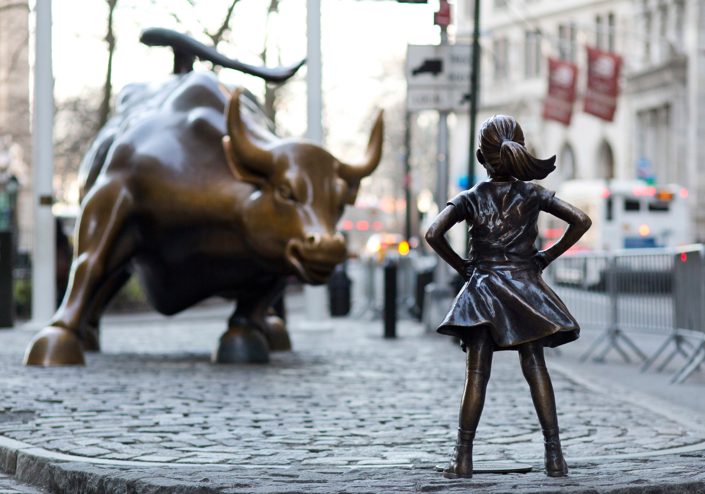
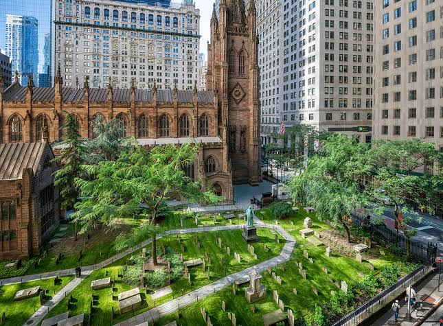
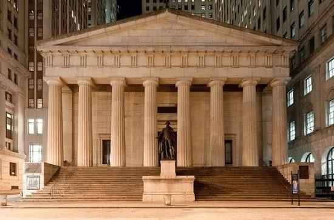
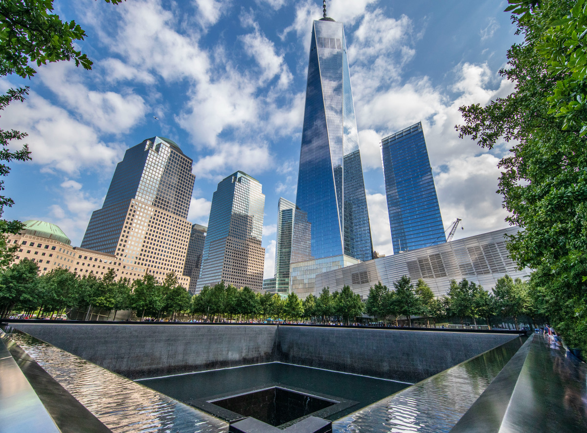
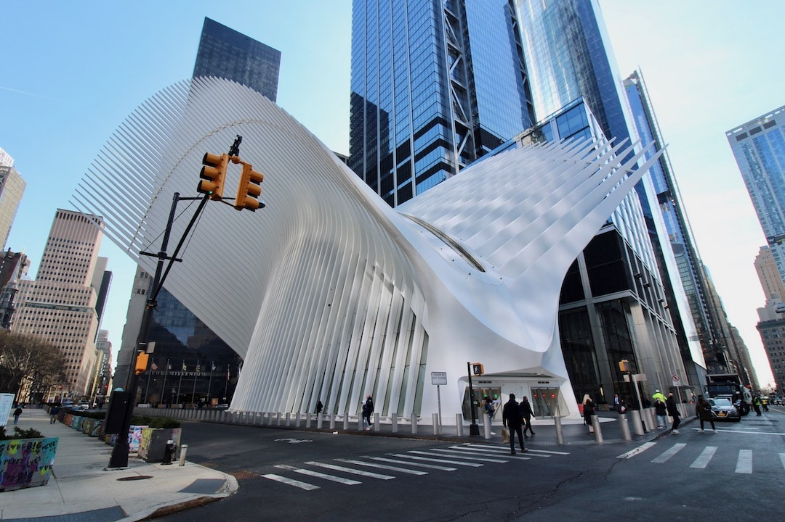
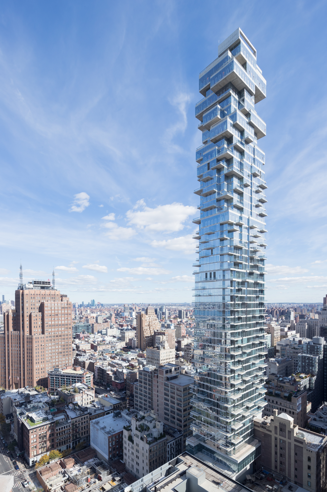
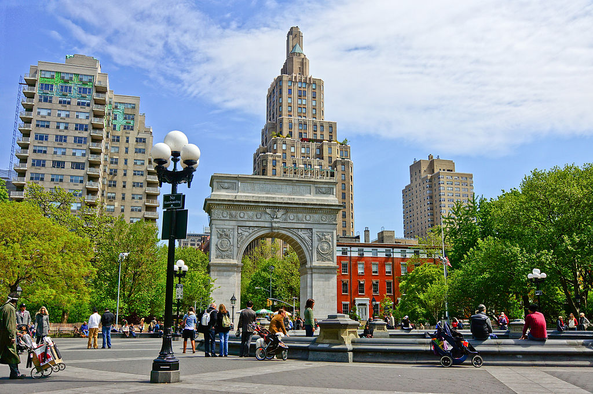
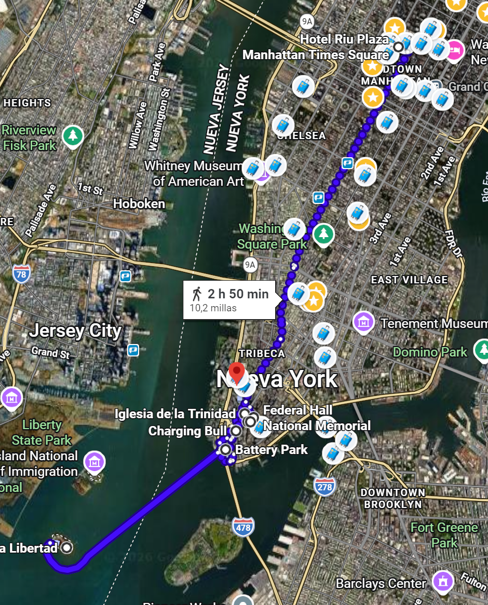

📅 Horario del día
Visita / Monumento
Comer / Beber
Desplazamiento
08:00
🚕 Metro o Taxi. Hotel → Battery Park (30 min)
Salida temprana hacia Battery Park para coger el ferry a la Estatua de la Libertad.
09:00 – 14:00
🗽 Estatua de la Libertad — Pedestal + Corona (5h)
Ferry de ida y vuelta. Visita completa con subida al pedestal y a la corona. ¡Las vistas desde arriba son increíbles!
14:00 – 15:30
🍽 Comer — PJ Clarke's on the Hudson
Valorar reservar en PJ Clarke's on the Hudson (20–60€/p). Buena ubicación cerca de Battery Park.
15:30 – 16:00
📸 Battery Park (30 min)
Fotos con la Estatua al fondo y visita al fuerte Castle Clinton. Debería estar vistiado del día anterior, pero por si no dio tiempo. Deberíamos ganar tiempo en esta parte para no volver tan tarde.
16:00 – 16:05
🚶🏻♂️➡️ Caminar Battery Park → Wall Street
Caminar hasta Wall Street.
16:15 – 16:30
🐂 Bull de Wall Street
Foto con el toro de Wall Street.
16:30 – 17:00
⛪ Trinity Church (30 min)
Preciosa iglesia gótica junto a Wall Street. Entrada gratuita.
17:00 – 17:30
🏛 Bolsa de NY · Fearless girl · Federal Hall
Fachada de la Bolsa de Nueva York y ambiente del Financial District.
17:30 – 17:45
🚶🏻♂️➡️ Caminar Wall Street → Memorial 11S
Caminar hasta Memorial.
17:45 – 18:15
🏬 Century 21th (30 min)
Gran outlet en esta zona de NY, con buenas ofertas.
18:15 – 18:45
🕊 Memorial 11S (30 min)
7 min desde Trinity Church. Monumento muy emotivo con las piscinas reflectantes.
18:45 – 19:00
🏢 One World Trade Center (15 min)
El edificio más alto de NY. Se puede ver por fuera impresionante.
19:00 – 19:30
🛍 The Oculus + Brookfield Place (30 min)
Centro comercial futurista junto al WTC. Arquitectura espectacular.
19:30 – 19:45
🚶🏻♂️➡️ Caminar The Oculus → Jenga Tower
Caminar hasta Jenga Tower.
19:55 – 20:00
🗼 Jenga (15 min)
El edificio con forma de Jenga — foto obligatoria.
20:00
🏛 MMUSEUMM (si da tiempo)
Museo minúsculo y peculiar — si el tiempo lo permite.
20:00 – 20:20
🚶🏻♂️➡️ Caminar Jenga Tower → Leon's Bagels
Caminar hasta Leon's Bagels.
20:20 – 21:10
🍕 Cenar — Leon's Bagels / Joe's Pizza
Leon's Bagels o Joe's Pizza, y sentarse en Washington Square Park. Cenar rápido y pronto, porque hay un buen trecho hasta el hotel.
21:10 – 22:00
🚶🏻♂️➡️ Caminar Jenga Tower → Leon's Bagels
Caminar hasta el hotel (50 min).
22:00 – 00:00
🏨 Hotel
Regreso al hotel. ¡A descansar!
Ruta en Google Maps
🗺️ Abrir ruta 1 en Maps 🗺️ Abrir ruta 2 en Maps